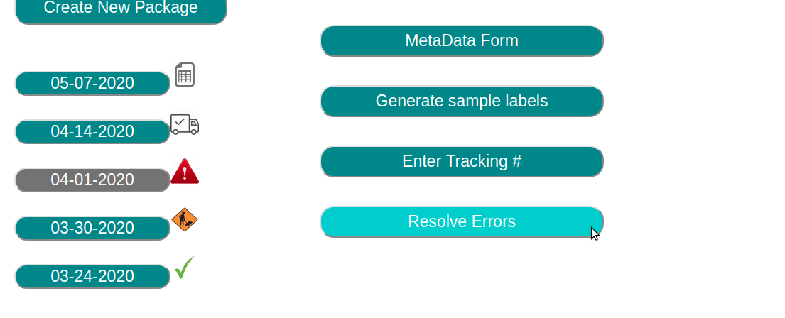
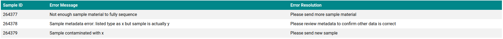

Whenever there is an issue with samples in a package, TGen North scientists can communicate those errors back to the user via our Pimpoint Collaborator Portal.
There are two ways to navigate to the error page:
1. Users can click the error icon next to the package on the sidebar
2. Users can click the "Resolove Errors" button on the package summary page
The error page displays the error information in a table. Each error includes the sample id, error message and error resolution.